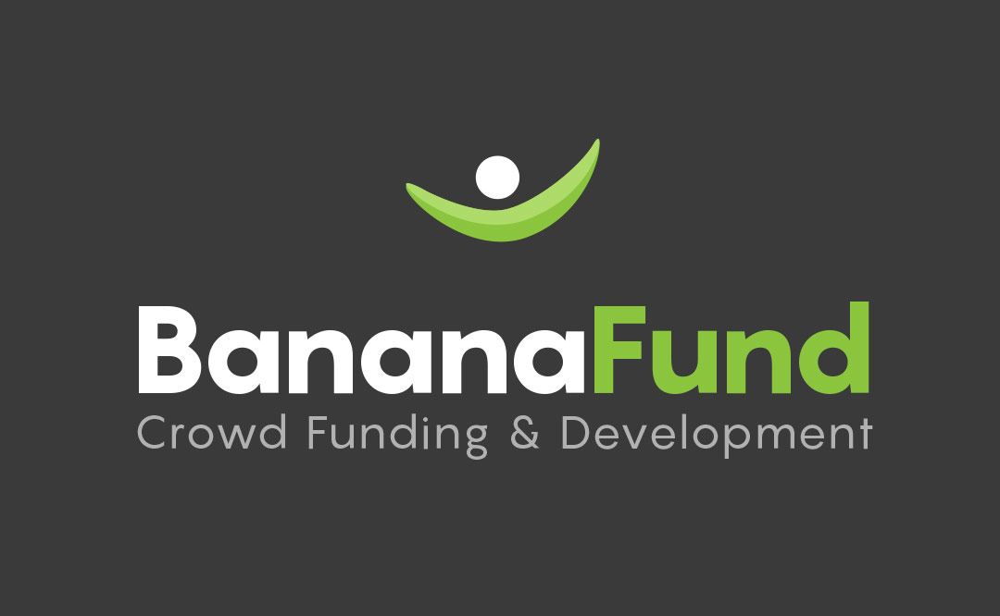
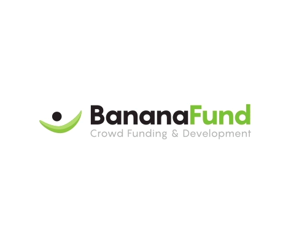

INDEX
Summary ……………………………………………………………………....……………………. 3
Mission…………………………………………………………………………………………....…… 4-6
What are tokens?…………………………………………………………………………….…… 7
Project Life-Cycle (Summary)…………………………………………………..…………… 8
Starting a Project (Pre-Publish)………………………………………………..…………… 9
Crowd Brainstorming……………………………………………………………………..…… 10
Initial Token Offering…………………………………………………………………...……… 11-13
Banana Fund Project Review………………………………………………………………… 14
Marketplace……………………………………………………………………………………….… 15
Failure to reach revenues………………………………………………………………..…… 16
Daily Project Operations……………………………………………………………………… 17
Raising Additional Funds (Token Dilution)………………………………………….… 18
Asset Sales / Voluntary Company Dissolution……………………………….……… 19
Project Bankruptcy ……………………………………………………………………....……… 20
Project Graduation / Equity Delivery……………………………………………..……… 21
Crowd Safety Net………………………………………………………………………………..… 22-23
Crowd Voting Mechanism…………………………………………………………………..… 24
Referral Commission & Automatic Ref-Back Agreements………………...….. 25
Listing Fees………………………………………………………………………………………...… 26
Banana Fund Profitability……………………………………………………………………… 27-29
Banana Fund is a one-stop solution to creating a business from scratch!
Share an idea. We’ll evolve it / fill in the gaps. Fund it. Build it. Run it. And report back to you, for any desired changes you’d like to make, every step of the way.
You’ll receive
frequent dividends if your project achieves profitability.
You
can buy/sell your positions on our marketplace in real time. If you
want to sell your idea, and walk away at any time - you’re welcome
to do that. Alternatively, you can take physical delivery of your
business equity. And once your business is fully established, you can
graduate it from our system entirely, and take it off into the world.
We’re a full service solution! Writing down your idea, and your rules, is all that’s required of our entrepreneurs. And we even make that part easy!
To re-iterate in bullet point form; Banana Fund is:
A platform for users to post business projects, and for our crowd to brainstorm, and collaborate with the entrepreneur (for a reward!), to develop the idea, it’s documentation, and settings / terms. Aiming to provide complete transparency for all parties, and to create an ‘instruction book’ for how Banana Fund should build & run the project on behalf of the crowd.
An equity crowdfunding platform, using Bitcoin to finance user projects.
An online marketplace for users to buy/sell their (hopefully) dividend paying positions in user projects, in real-time.
A communications platform, for project managers to share near real-time accounts, and updates, aiming to provide unprecedented levels of operational transparency to their backers. And for the crowd to continually make suggestions, and feedback.
A crowd control platform, where backers have established procedures to vote on any desired changes / evolutions to the businesses, to overrule/change the assigned project manager. It’s your business. You’re in control! We work for you.
In conclusion…
A
fair, and transparent platform for people to list, back, manage and
trade startups. Until such time they choose to take physical delivery
of the equity in the project, and graduate the startup (now an
established business) away from our platform, and into the world.
And we even have a little device, that does it’s best, to protect backers from any failed projects as well.
All entrepreneurs need to do is write down the broad strokes / beginnings of their idea. And any specific terms / conditions they have. (Ownership, Voting rules, Etc). Absolutely nothing else should be required of them. Write down an idea, Banana Fund and it’s crowd does all the work, and everyone gets their agreed share. Easy!
Apply the knowledge, experience and suggestions of the crowd to form business plans, rules and processes documentation. And to reward those contributions with a small stake in the project. (Entrepreneur approves suggestions / edits, after the crowd has upvoted, and commented on them)
Getting started is the hardest part! So we aim to reward those that act first, and subsequently enable everything... We do that by breaking up the ‘backers stake’ in the business into 20 blocks. With each block being a multiple in price of the first block. See the ‘Initial Token Offering’ section for details of this key feature!
We use a system of discount coupons, containing an encrypted key, called Tokens, that, when provided along with a request to buy physical equity in a given project, enable the purchase of a piece of otherwise contractually cost prohibitive equity, for a nominal sum of just $1.
Users can buy/sell these tokens in real-time on our marketplace.
Prices are set entirely by supply & demand, users can place bids
to buy/sell at any price. And the most competitive rates are accepted
automatically. Marketplaces are completely transparent, showing who’s
buying/selling and exactly who owns what.
Banana Fund, acting
in trust, and on behalf of the entrepreneur and crowd backers, holds
all the physical equity pieces. Until such time that they are
purchased by Token holders (or anyone willing to pay the insane costs
associated with purchasing without a token). Meanwhile, per our
publicly viewable terms / equity holder agreement; we enforce the
will of the token holders, and issue any available dividends between
them; per the settings established in the project documentation.
Investors should be able to review the details of their companies, in as close to real time as is physically possible. Waiting on quarterly results, and annual meetings is a relic of the pre-internet era. If you own the business; you should be in on the day-to-day action! It’s your company!
You should not be forced to base your buy/sell decisions on less than all the information. That is unfair, dangerous and wrong.
Banana Fund serves to provide as close to real time reports of sales, revenues, expenses as we are physically able to do so. Along with daily updates from your project manager, as to exactly what is happening, what the company is planning to do at any given moment, and their personal opinions of any given event.
Using the aforementioned transparency, combined with the established processes defined in each project’s documentation. We aim to give token holders complete control.
The crowd can communicate ideas and suggestions all the time, for the designated project manager to apply at their discretion. However, if a significant disagreement of opinion / strategy occurs, then we have voting procedures in place to see the will of the crowd enforced. If a voting majority occurs, then Banana Fund will ensure the project manager falls into line, or they will be replaced.
Banana Fund is a business development and management company. We assign each project a manager, and using the project documentation and rules as an instruction book, along with the funding from the crowd - we make that business happen! Contracting Banana Fund staff / expertise where possible, and hiring additional staff specific to requirements of each individual business.
We basically do all the work, so that the entrepreneur and the crowd don’t have to. Yet, they’re both still in control. They just delegate the day to day operations / leg work to the assigned project manager (Banana Fund)
Banana Fund stands behind it’s crowd backers. If a project you back runs into trouble, and ultimately fails. We have a system in place that will do it’s best to compensate you. No guarantees of course, it’s just a best effort process:
We allocate 90% of all safety net mandatory token purchase premiums, and a full half of Banana Fund net revenues specifically towards compensating Token Holders of failed projects.
This way, backers have our entire portfolio backing them up, in the event that they pick a dud! So even if you choose a bad project; we’ll see what we can do to help you! So that you can take another shot at backing the next big thing.
As a project develops beyond the startup phase, and starts looking to expand beyond the realm of the Banana Fund platform. We have created a process for each project to graduate our system, and take the form of a regular company. No longer reporting to our platform, processes or marketplace functions.
At the time of graduation (after token holders have voted for such), token holders are presented with two options; to accept a buyout of their tokens at an agreed upon above-market rate. Or to take physical delivery of their equity for a significantly reduced signing fee.
At that point, the project will be de-listed from Banana Fund. And is free to go about it’s business, as per any other company! Perform an IPO. Or whatever it wants to do. Our job is done!
Every project is
it’s own completely separate, and registered company; with Banana
Fund holding all the actual physical equity by default (as we’re
the ones that register each business on behalf of the crowd /
entrepreneur). Tokens serve as ‘discount coupons’ that can be
used to buy (and take delivery of) the equity in your project, for a
nominal sum.
Whilst you're holding tokens, per our user
agreement, Banana Fund will distribute all earnings, earmarked for
dividends via the project documentation / business plan.
Tokens
also serve to enable our crowd voting mechanism. Token holders can
apply their voting weight to dictate how the business should be run.
And Banana Fund enforces the will of the crowd, per the documentation
established by the entrepreneur when starting their project.
Purchasing
Project Equity
If there are 100 tokens in a project. Then each token will represent the right to buy 1/100th of the business. And each token will enable the holder to buy a 1/100th (1%) piece of the business for just $1. Thereby valuing the business at $100. Basically nothing.
Anyone attempting to buy equity from Banana Fund, in that same business, that does not hold a token (and they can!), will be required to pay no less than $1billion per 1/100th piece of the business, per our equity holder agreement. Thereby valuing the project at $100billion. An unjustifiable price that nobody would pay. Thereby safeguarding the interests of token holders (and our entire process)
* In the event
that someone does buy equity from us, at that insane price. We have
an automatic buy-back clause in place to purchase the token back, at
the $1billion + sale price. (However, that’s unlikely to ever
happen; as you would take physical delivery of the equity long before
it reaches that kind of valuation. We’re a startup incubator, not a
full on stock market)
Learn more in our Graduation
& Equity Delivery section.
1. Pre-Publish… The first draft of the entrepreneur's idea, and initial settings configuration.
2. Crowd Brainstorming… Doc collaboration, idea & settings evolution. 0.015 Pre-Bids.
3. Initial Token Offering… Pre-Bids populate initial blocks. Then open to unlimited bids.
4. Banana Fund Review… Assign manager. Assess feasibility / legality. Refund if necessary.
5. Marketplace Launch… Tokens issued. Trading begins. Unsold ITO listed at set prices.
* Project Fails To Achieve Revenues… Marketplace suspends. Additional funding considered. If not viable; liquidate & add protected tokens to safety net.
6. Daily Operations… Updates from your project manager. Frequent dividends.
* Additional Funding… Requires shareholder vote. Dilute tokens to raise cash. Two options; add tokens to the marketplace, to drip sell as the price crosses threshold. Or run an ITO in parallel to the marketplace (for higher risk situations, requiring all or nothing).
* Bankruptcy / Liquidation event… Marketplace suspended. Cash / assets liquidated, and issued to token holders. If bankruptcy; move remaining protected tokens to safety net.
7. Graduation… Users vote to advance the listing beyond Banana Fund. Accept instant buyout price. Or pay a nominal $50 admin fee to take delivery of your equity. De-list listing.
It’s free! To begin, users just need to fill out as much of our listing form as they’re able. And then they can publish their listing for our crowd to begin brainstorming.
Basic
information
Project name, 1 line description, upload a
project image / logo. Select appropriate categories for your
listing. (To help populate the rest of the create listing process)
Ownership
percentages
Banana Fund (3%). Brainstorm Rewards (1%).
Listing Fee Sponsor (1%). Allocate the remaining 95% between the
Entrepreneur, Backers, and any other partners.
Crowd
voting settings
Determine the voting weights required to
control the business.
Answer some
questions about your project.
We’ve designed some very
simple questions, the answers to which will help evolve your
business model / plan.
Create /
Upload Project Document(s)
Write / upload as many information
documents, specifications, plans, rules, and supporting files as you
like.
Define any
specific terms
Do you have any specific conditions regarding
this business? Do you want a job? Do you want something done in a
certain way? Detail what’s important to you here. And we’ll
honor it - provided the crowd agrees / will fund you.
Once a project is published, the crowd brainstorming phase lasts a minimum of 14 days, and can be extended by the entrepreneur as required. The better you make the pitch & plan; the more likely the project will hit its funding goal (or even more than that!)
Entrepreneur has the final word
The crowd can submit / share ideas, document edits, settings adjustments. That the entrepreneur can accept / adapt / ignore as he likes. All the project settings, plans, documents, etc, can be changed continuously for an unlimited number of edits.
Brainstorming Rewards
A minimum of 1% of project tokens are allocated towards rewarding users that interact with each project. (This setting can be increased at any time, to encourage more participation; but it cannot be decreased)
Users acquire ‘points’ for every interaction they make with a project during its brainstorming phase. Each action is weighted differently. The top interaction score, for that project, sets the bar for the rewards scheme. And all users that score at least 5% of that top score, will receive a proportional share of the tokens as they’re issued.
Eg. 2 qualifying scores…. One with 60 and the other with 30... Mean the 60 score will earn ⅔ of the tokens on offer, and the 30 score will receive ⅓ of the available tokens.
Anyone deemed to be abusing the rewards scheme, or who has been disqualified from other listings previously, will not count towards the scoring system at all.
Manual Rewards /
Token Assignments
Entrepreneurs, at their discretion, can
assign tokens to specific users during the brainstorming phase. Ie.
To reward someone with 2% of the project tokens, in return for
creating an explainer video.
Pre-Bids
If
you like a project, and want to secure a piece of the cheapest tokens
for sale during the Initial Token Offering, you have the option to
place a ‘pre-bid’ of 0.015btc. These bids, limited to one per
person, are ordered according to when you scored your first
‘interaction point’ with this project (not in the order that you
make the bids).
Pre-bids serve to populate the best spots in the initial token offering, as that launches. You can cancel the bids at any time, however you’ll lose your priority placement in the queue.
CALCULATIONS
1 / Equity on offer (as a decimal) * Funding Goal (bitcoins) = Total Project Tokens.
Funding Goal (in bitcoins) is the number of tokens on offer, for the Initial Token Offering.
Block 1 Token
Price: 0.09523809525
All other blocks (2-20) are priced at Block
number x 0.09523809525
The number of tokens for sale in each block is as follows:
|
|
TOKEN PRICE |
QTY (% OF TOKENS ON OFFER) |
|
BLOCK 1 |
0.09523809525 |
1 |
|
BLOCK 2 |
0.1904761905 |
1 |
|
BLOCK 3 |
0.2857142857 |
2 |
|
BLOCK 4 |
0.380952381 |
3 |
|
BLOCK 5 |
0.4761904762 |
5 |
|
BLOCK 6 |
0.5714285715 |
5 |
|
BLOCK 7 |
0.6666666667 |
5 |
|
BLOCK 8 |
0.761904762 |
7 |
|
BLOCK 9 |
0.8571428572 |
9 |
|
BLOCK 10 |
0.9523809525 |
12 |
|
BLOCK 11 |
1.047619048 |
12 |
|
BLOCK 12 |
1.142857143 |
9 |
|
BLOCK 13 |
1.238095238 |
7 |
|
BLOCK 14 |
1.333333333 |
5 |
|
BLOCK 15 |
1.428571429 |
5 |
|
BLOCK 16 |
1.523809524 |
5 |
|
BLOCK 17 |
1.619047619 |
3 |
|
BLOCK 18 |
1.714285714 |
2 |
|
BLOCK 19 |
1.80952381 |
1 |
|
BLOCK 20 |
1.904761905 |
1 |
The funding goal, and the equity on offer, determine how many tokens are created to represent 100% ownership of a project. That includes:
Banana Fund
Cut: 3%
Listing Fee Sponsor: 1%
Crowd Brainstorming: 1%
minimum
Entrepreneurs Cut variable - share 95% cut with the
backers
Sold to Backers for Finance: variable - share 95% cut
with the entrepreneur
The tokens that are listed for sale, as
part of the Initial Token Offering, are broken up into 20 blocks.
The number of available tokens for sale in each block, are priced as
shown in the table above. (Users can buy fractions of a token,
rendering the unit prices unimportant). The sum of all tokens sold,
equals the funding goal.
In the event of
oversubscription, the token prices in all blocks will increase by a
percentage of the level of oversubscription.
Eg. Funding goal
is $100,000. $110,000 is raised. Then all block prices will increase
by 10%.
Users have the option to place limited 0.015btc ‘pre-bids’ during the Brainstorming phase - one per user, even before the Initial Token Offering begins. Those bids are ordered in a special way, based on the order in which users first interacted with the project.
As the Initial Token offering opens, those ‘pre-bids’ are added to the queue in their set order, and serve to instantly populate the initial blocks. And from that point on, all bids, of unlimited sums, are added to the queue in the order that they are received. First come first served, with later deposits overflowing into the next blocks, as each reaches capacity.
Users have the option to cancel their bids at any time, including those pre-bids, for a full refund. However, once cancelled, those users will lose their placement in the queue. And if they choose to bid again later, they will join the end of the queue. Meanwhile, all remaining bids bump up in the queue, with each cancellation; potentially moving closer to Block 1 (and the cheaper unit prices)
Once the funding
goal is achieved, a 7-day countdown timer will appear. And users will
have their final opportunity to cancel their bids, if they are no
longer happy with the terms (or new token prices, if the I.T.O. is
over-subscribed) .
In the event that cancellations cause the
funding to drop below the goal, the timer will cancel, until such
time that the threshold is met once again; and then a new 7day time
will occur.
As the timer counts
down. The ITO will be complete. All bids will be locked in. And the
project will be sent to Banana Fund for review. And barring any legal
/ feasibility issues, the tokens will be issued, and the marketplace
will go live shortly thereafter.
Scalable Projects; Partial Funding Goal Option
There are some projects that are well suited to scaling. Subsequently they may be seeking large sums of money, but actually not require nearly the total amount in order to get started.
For those projects,
they will define the minimum sum they require to get started, and as
soon as the IPO hits that goal, the project will begin it’s 7day
countdown, and commence shortly thereafter. With any remaining
(unsold) tokens being listed for sale on the marketplace, and being
sold in due course; as the market rates climb to pass through their
set sale prices.
The ITO opportunity!
Needless to say, the strategy with Initial Token Offerings is to bid as soon as you’re able. As the block 1 price is 1/20th of the Block 20 price.
Thereby, if you get a $10 bid into block 1, the project funds successfully, and the subsequent marketplace holds its price. You’ll have made 20x your money back ($200) right there. Before the project is even built, or really even started construction!
Banana Fund Project Review
Once the Initial Token Offering is complete, the project will be sent to Banana Fund for review. Here we’ll check the legal issues around the idea, and the overall feasibility of the plan & it’s funding levels.
If the funding is way off (insufficient), then we’ll kick the project back down to the Initial Token Offering phase, pursuing a revised funding level.
If there are minor legal issues with the plan, we’ll discuss and brainstorm those via the project news. And see if adjustments to the model can be made, to come to some middle ground. (Users will be presented with an opportunity to cancel their bids, if they do not like the proposed changes to the model. And if the funding level drops, it’ll be kicked back down to the I.T.O)
If a project is deemed to be exceptionally risky, well beyond the norms of a typical startup, we will make an announcement in the project news. And at our discretion, we may also advise users that we are reducing the Crowd Safety Net level of protection on their positions. And subsequently offer them the opportunity to cancel their bids for a full refund.
For projects / ideas that are completely illegal, unethical, and that we don’t want to be associated with in any way. We’ll fully refund all backers. And if you wish to contact the entrepreneur to pursue that privately - outside of the Banana Fund platform and protections - that’s up to you.
All Clear
In the event that everything looks ok. We’ll assign a temporary project manager (whilst we find one suitably qualified to the needs of the project), we’ll issue the tokens and activate the marketplace.
Users can buy and sell their tokens on the marketplace at any time. Listing them for sale at any price they like. The marketplace is a completely free market. Supply and demand dictates the fluctuating prices. With no other market controls, or daily limits in place.
Marketplace Fees
We use a maker / taker fee schedule. Makers incur a 0.15% fee. Takers incur a 0.25% fee.
Every trade occurs between two parties: the maker, whose order exists on the order book prior to the trade, and the taker, who places the order that matches (or "takes") the maker's order. Makers are so named because their orders make the liquidity in a market. Takers are the ones who remove this liquidity by matching makers' orders with their own.
Marketplace Design
To get an idea of
what our marketplace will look like, I direct you to
Poloniex:
https://poloniex.com/exchange#btc_xmr
This is a good example of what we’re working towards... Where they trade Bitcoins against numerous different other crypto currencies, and have a marketplace for each. We will trade bitcoins against individual user projects. And have a marketplace for each.
So this is a very good insight of what we’re in the process of building!
Marketplace Reporting Features
You will be able to see the following, with relation to marketplace trading;
A full trading history of both your buys, sells and maker/taker fees.
An up to date list of who owns every single token, in each project. Along with any physical equity held off-market. (eg. If a user has taken delivery of their position)
A summary view
of token ownership changes, over various time periods.
(To see
who is net buying, and who is net selling)
The full order book; of bids to buy/sell. And who those orders belong to. Along with a market depth graph to provide a visual aid as to the state of the order books.
A ‘Top Traders’ display, to show which users are buying & selling to maximum effect.
Public profiles for each user, detailing their holdings & trading history in all projects.
Marketplace Suspension
If there are any on-going significant events in a given project, such as imminent bankruptcy, or an active shareholder vote to graduate the project. Then the marketplace may be suspended temporarily / permanently for the protection of buyers, and to prevent any potential abuses of the crowd safety net. Marketplaces may also be suspended for technical reasons from time to time, but we’ll try and keep that to a minimum!
This is a project setback / failure scenario, and mitigation plan:
If a project is part way through development, and for whatever reason, is falling drastically short of the funding required to launch / get started / achieve profitability. Then we will;
Suspend the
token trading marketplace.
Attempt to
raise additional funds via a second token offering. (Token
Dilution)
If the initial
token offering fails to hit its funding goal. A second token
offering can be attempted with even better terms for new backers.
Failing that,
we will be forced to declare the project a failure. And transfer
users to the crowd safety net. Where protected tokens will join the
‘revolving refund queue’.
Any remaining project cash /
company assets will be liquidated, and added to the Crowd Safety Net
revenues, used to help refund backers of all failed projects.
As soon as a project reaches its funding goal, via the Initial Token offering, and is approved by Banana Fund to get started, issue it’s tokens and open it’s marketplace. It begins the daily operations phase.
Daily Updates
The project manager will post daily news, and updates regarding the development, and day to day operations of the project. You will be kept in the loop about just about everything. It is the project manager's job to summarise each day's activity, plans, problems and thoughts. It’s literally a running commentary of everything the project is doing, and planning to do.
Project Cash / Expenses
The status of the project funding, along with invoices / receipts for how it is used. Are updated daily. And we have a special section in each projects’ forum where you can discuss each project's expenditure, recommend cost savings, alternative suppliers etc.
Accounts / Revenues
As frequently as is physically reasonable to do so, we want to keep you up to date with the day to day sales, and project revenues. For some online businesses, this can be automated and shown in real-time. For other projects, they’ll post daily summaries, and more detailed reports every week/month.
But the main aim of this process is to keep investors in the loop, the whole time! Not force you to wait on quarterly sales reports. We want daily / weekly updates at the very least. Our reporting requirements are higher than any public company. We expect complete transparency from our projects / managers.
Dividends
As soon as revenues are known, and there are earnings to dish out (per the project documentation / settings). Dividends should be paid (and project available cash updated; for funds re-invested into the business). This process should happen ‘as frequently as possible’. Some projects can literally pay dividends daily.
Token holders can vote to create additional tokens, in order to raise funds for the business, to either pay debts, or to scale an already successful operation. This in turn dilutes the ownership of all the existing tokens equally.
Method 1: A second Initial Token Offering
Suspend the
marketplace.
And launch a second I.T.O to sell the new tokens.
Only once the funding goal is reached; do all the tokens get issued,
and the marketplace return to normal.
Method 2: Marketplace ‘Drip’
Token holders can vote to create tokens over time, bit by bit. This involves no disruption to the marketplace. Additional tokens are simply added to a ‘project account’ periodically, and listed for sale alongside regular tokens, at whatever price / strategy the token holders have agreed to. With the net benefits of the sale being added to the project available cash.
You can either do
this in one big lump sum.
Or, to prevent a sudden shock to the
marketplace, you can slowly dilute the tokens over time. Eg.
Creating 50 new tokens every week for 10 weeks. Rather than 500 all
at once.
The Golden Rule
Token holders can vote on whatever terms they like regarding how many tokens to create etc. The only rule we enforce is that all existing token holders be treated equally.
If there is some extenuating circumstance that should require a breach of this rule. Then it shall require 100% of the token holder vote, in order to override this fundamental safety mechanism.
Crowd Safety Net
Token dilution does not affect any existing crowd safety net coverage. Your protected tokens are still protected for the same amount per token.
Token holders may vote to sell individual assets, or release company cash as a special dividend, per the crowd voting settings at any time. This can be extended to voluntarily shutting down the entire business, liquidating all assets and paying out one final dividend.
Asset Sales
Very simply, the shareholders create a motion to sell a specific asset(s), or issue some of the company cash as a special dividend. And if approved, it happens at the earliest convenience.
Voluntary Company Dissolution & Liquidation
This basically works the same way as the aforementioned asset sales. The entire company is liquidated at the earliest convenience, and one final dividend is paid to all token holders.
Safety Net Coverage Implications - Important!
In the event of a voluntary (unnecessary) company dissolution event, you will be forfeiting all safety net coverage for your tokens. So make sure you only vote for such an action, if the final dividend is worth it.
In the event of individual asset sales. Banana Fund will review each instance, on a case by case basis, to ensure that there is no detrimental (suicidal) effect of this action on the business as a whole. If the act is deemed reckless, Banana Fund may elect to reduce existing safety net coverage for any tokens in this project, by any fraction it deems fair. And may remove all future protections from new token purchases, which will likely impact the resale price.
You are welcome to consult with Banana Fund in advance of any vote. If we give the all clear, then there’ll be no affect on your safety net coverage.
In the event of project bankruptcy, the marketplace is suspended. All protected tokens are moved to the crowd safety net. And any recoverable assets from the business will be liquidated, and the benefits added to the crowd safety net.
The Difference between Voluntary Dissolution & Bankruptcy
Voluntary dissolution happens in projects where they have very high asset values, or lots of company cash. But where revenues are very low (but profitable). And thereby the company is worth more money shut down, than the little / no income it provides.
Bankruptcy occurs in projects that are operating at a loss, and their cash is decreasing constantly, or has already run out.
Problem Projects
For projects that
are identified as in trouble (approaching possible bankruptcy),
Banana Fund may take either of the following actions, at any point:
This project
is showing signs of distress. We are discontinuing / reducing safety
net coverage for future token purchases in this project. (Existing
cover unaffected).
* A warning message will appear on the
marketplace, with our analysis & reasons.
This project is showing serious cause for concern. We are temporarily disabling the project marketplace, pending an action plan to turn things around, or a declaration of bankruptcy.
Banana Fund
will not sell any of its positions in problematic projects,
with an imminent risk of failure. That would be unethical.
*Any
time Banana Fund decides to sell any of its tokens, in any project,
for any reason, it will provide 30 days advance notice, along with
full disclosure as to why.
1 Token Minimum
You require whole token(s) in order to take delivery of your equity. Fractions of tokens do not generate the necessary encryption key, required to effect the contracted discount.
Paperwork / Contract Fees
We process purchase orders once each month, grouping all requests into one batch. Subsequently, only one legal fee needs to be paid (for the creation / signing of the equity holder agreement specific to that project). Thereby, if someone else has already paid it, you can ride on the back of their order for free! Or you can collaborate with a few people to share the fee between you, and all take delivery at the same time.
Project Graduation
The crowd can vote
to graduate the project beyond the Banana Fund platform at any time,
per the crowd voting settings established for that project. At which
point all token holders will be offered two options;
To pay a
nominal ~$50 signing fee, to take delivery of their physical
equity.
To accept an agreed upon, automatic buyout price for your tokens. (These funds will come out of the projects available cash; unless there is a financial backer looking to snap up the extra equity)
Once a project has graduated it will basically be removed from Banana Fund. There will be no more crowd voting settings, or daily reports, and transparent accounting. Only the legal minimum required reporting, per the business plan, and equity holder agreement you sign.
*Warning! This is a best effort process. It should not be relied upon.
Token holders are moved to the safety net, in the event that a project fails. Where we will do our best to compensate the backers as best our revenues allow.
Coverage
Tokens purchased on the marketplace and during initial token offerings, are covered for 80% of their purchase price by default; less any dividends received during the course of holding those tokens.
‘Free’ Tokens issued to entrepreneurs, brainstorm contributors, and for listing fee sponsors are not covered by default. (To add coverage, just sell them on the marketplace, and buy them back again)
At our discretion, we may decide to reduce, or disabled coverage offered for select projects at any time. Any existing cover will be unaffected. It’ll only apply to new purchases.
Premiums
There is a 1% mandatory surcharge added to the cost of all token buys (both in Initial Token Offerings) and via the marketplace. (With the exception of tokens purchased in Banana Fund itself)
Eg. You buy 10
tokens for 0.01 each…. Total cost: 0.1 + 0.01 Safety Net premium =
0.11
Then if that project fails, your 9.98tokens (after 0.2%
market trading fee) are covered for a total of 0.08 BTC. Less any
dividends you receive during the course of holding those tokens.
Selling Tokens
Selling tokens will terminate the coverage applied to them. By default, tokens with the least amount of coverage, are sold first. Before any with a greater level of protection.
Source of Funds
90% of all
premiums are added to the safety net payout pool daily.
Along with
50% of all Banana Fund net bitcoin revenues.
These are the only incomes this refund process has available to it. If they are insufficient, then we will not be able to refund everybody.
Refund Process
Once the project has been declared a failure / bankrupt. It’s market place will be suspended. And protected tokens will be added to the bottom of the Safety Net refund queue / list. Any remaining company cash / asset liquidations will be added to the safety net pool, as they become available. And used to help compensate all users in the safety net.
Refunds are processed once daily. The funds available is distributed between the top [variable amount] users in the refund queue, equally (up to their maximum due). Once paid, those users are either removed from the queue (if fully refunded), or they cycle back around to the bottom for another go around for their remaining due amount. And any remaining available funds, are either rolled over to the next day, or used to refund some more users from the top of the queue that day.
Time Limitation
Pending refunds may remain in the safety net queue for up to 18 months. We have to limit this process, or risk stalling the process forever, in the event of a string of large failures.
The design of the refund queue, with it chipping away at refunds, and cycling around and around, prevents one large deposit from blocking it up. Meaning everyone should get at least a partial refund, if we’re not able to fully refund you.
By default, the project manager has free reign to run each project however he thinks best (in accordance with the company documentation). Users and token holders can make suggestions at any time, that the manager can adopt at their discretion.
If Token Holders want to force a course of action (that the manager doesn’t agree with), they can raise a motion for token holders to vote on / object to. And Banana Fund will enforce the will of the crowd, per the voting majorities that the entrepreneur initially sets for each of the categories listed below.
Using these categories, and their adjustable voting weights, an entrepreneur can retain control / influence / veto power over the business without having to own 51% specifically. You can engineer the weights in a few key categories below, to basically retain full control (or at least veto power) over the business with a very small stake. Allowing you to create a big business, raise a lot of funding via selling a large stake, without losing control.
Token
Dilution
If the project needs / wants to raise additional
funding, either to survive or to expand. The terms of the dilution
proposal will be voted on here.
Change /
Overrule Project Manager
If Token holders decide to force
something through, that the project manager doesn’t agree with.
They can vote to overrule him (or change the manager)
Adjust
Revenue Allocations
Vote to change what percentage of
revenues are reinvested into the business, issued as dividends, used
to buy back tokens, etc.
Perform an
asset sale / liquidate / voluntarily dissolve the company
Vote
to sell company assets, either to raise company cash, or a special
dividend. Or close the project entirely, liquidate funds/assets
whilst they still hold value.
Buyout
Proposal / Graduate the business
Once a businesses is well
established, token holders may decide to graduate it from the Banana
Fund platform, and take the business mainstream. Or if there is an
external buyer looking to snap up all the equity; the terms of any
bulk buyout can be discussed here.
Adjustment
to the crowd voting settings
Vote to adjust the voting
weights on any of the above settings.
Motions last 14 days. If token holders do not object in that time, they will be deemed to be in silent agreement to the motion. A motion will automatically pass/fail if enough voters actively agree/disagree that any remaining votes become irrelevant. If you buy/sell tokens whilst voting; your vote will be increased / removed / reduced accordingly.
We believe word of mouth is the most effective form of advertising. And to encourage that our referral program pays the following daily commissions, for the life of every user you bring to Banana Fund via your referral link / promo codes:
10% of
the value of every token purchased during an Initial Token
Offering.
0.5% of
the value of every bitcoin balance cashout.
0.015% -
0.025% of the value of every marketplace token trade
(Depending
on whether it’s a ‘maker’ or ‘taker’ fee being charged)
Referral commissions are accumulated, and added your account balance in a single payment, the following server day.
Ref-Back Agreements
Users have the option of sharing up to 75% of their commissions back with the person that created them. As an incentive for signing up to Banana Fund using their promotional code / ref link.
Ref-Back payments are paid to the user once each server day, for their cut of all the commissions generated the previous day. Meanwhile, and at the same time, the sponsor receives their net commissions / earnings (after paying the ref-back payment)
Ref-Back agreements are automatically enforced by Banana Fund. And cannot be changed after signup. There are no exceptions to this rule.
Abuse
Any attempt to abuse our referral program, or refback functions, will result in the privileges being removed, and the forfeiture of your entire downline, ability to create referral links, and your ability to receive refback payments.
Pre-Publish…. No fees. Unlimited time.
Crowd Brainstorming… $1 per week. (Minimum 2 weeks)
Initial Token Offering… $1.50 to initiate countdown to the end of pre-paid brainstorming week. The $1.50/week basic fee increases by 50% every week thereafter, until it maxes out at $30/week.
---
1% of the
tokens in a project are set aside for the ‘listing fee sponsor’.
The entrepreneur has first refusal to pay these fees. Thereafter,
they are open to any user. Whoever is the last person to pay
the weekly listing fee; is credited with the 1% of tokens at the time
of issue. If a project fails to fund, listing fees are generally not
refunded. Users should only back projects they believe in.
2 weeks of
arrears are permitted before we shut down a project.
- If the
listing funds during a period of arrears, the debt is forgotten.
The
last person to pay the listing fee is credited with the 1% of tokens.
$1.50 fee, to launch the ITO, may be paid at any time (Provided brainstorming fees are up to date as of that point) ; and that will activate the countdown timer, to launch the ITO at the end of the pre-paid Brainstorming period. (Default 14 days, can be extended by the project manager, up to the final second, and for as long as required)
---
Banana Fund does not intend to make money from Listing Fees specifically. They are designed to be a function to indiscriminately remove inactive / junk listings that will not fund.
We will issue lots of ‘listing credits’ for various actions on the site, to cover the cost of these fees. As we don’t want to put up any barriers to entry for Entrepreneurs. But at the same time, we want to keep the platform as clean, and focused as possible.
Banana Fund aligns
its goals with our entrepreneurs.
We want to succeed (profit)
with the successful implementation of their ideas. We are not here to
make a profit from their efforts, and get in the way as a result. We
don’t want to create barriers to success through inflated costs;
we’re here to knock those barriers down!
Banana Fund only
requires a tiny 3% stake in the projects we build.
Allowing
entrepreneurs the ability to distribute the remaining 97% of their
business between backers, contributors, and themselves. Giving them
maximum flexibility in order to get their idea off the ground (and a
good reason to use Banana Fund in the first place)
Banana Fund aims to earn the bulk of its money / value via the accumulation of marketplace trading fees. With the maker/taker fee schedule, we net 0.36% of every transaction (half in bitcoins, that we use as cash revenues to run the business, and issue dividends to our token holders), and the rest in tokens. Which we accumulate to build our positions in each project. And those accumulations can be substantial;
|
TURNOVER CYCLE |
TOKENS IN CIRCULATION |
0.18% AVG. NET FEE (IN TOKENS) |
|
1 |
97 |
0.1746 |
|
2 |
96.8254 |
0.17428572 |
|
3 |
96.65111428 |
0.1739720057 |
|
4 |
96.47714227 |
0.1736588561 |
|
5 |
96.30348342 |
0.1733462702 |
|
6 |
96.13013715 |
0.1730342469 |
|
7 |
95.9571029 |
0.1727227852 |
|
8 |
95.78438012 |
0.1724118842 |
|
9 |
95.61196823 |
0.1721015428 |
|
10 |
95.43986669 |
0.17179176 |
|
11 |
95.26807493 |
0.1714825349 |
|
12 |
95.09659239 |
0.1711738663 |
|
13 |
94.92541853 |
0.1708657533 |
So after just 12 turnover cycles (or a total trading volume of 1152 tokens / 11.52x the original issue), our stake in this example has increased from 3% up to over 5%.
And if you continue those turnover cycles, you get the following;
|
TURNOVER
|
TRADING
VOLUME AS A |
BANANA
FUND |
|
0 |
0 |
3% |
|
12 |
x11.52 |
5.07% |
|
42 |
x39.27 |
10.06% |
|
108 |
x95.28 |
20.01% |
|
500 |
x319.97 |
60.52% |
So as you can see, if there is high trading volume for a given project, the Banana Fund stake increases very quickly. And before long we own a substantial position in every single project. And those positions should all be dividend paying to one degree or another, which is a pure cash revenue!
Other Sources of Revenue
We will make a profit on just about every element of Banana Fund, to compensate us for the risks, and indirect overheads associated with supplying these services in the first place. And also, it is essential for the functionality of our crowd safety net. To which we donate 50% of our net bitcoin revenues.
Balance
cashout fees
We earn just under 4.5% of every cashout
each user makes. (A substantial sum considering the potential size
of our economy, backed by thousands of businesses - however, you
have to factor in the bitcoin exchange costs, and storage risks)
Listing
Fees
Listing fees start at ~$1/week. And increase weekly,
after a listing enters the Initial Token Offering phase, up until
the project reaches it’s funding goal. However, we will give away
a lot of free listing credits. So I would expect this to be a
relatively minor source of income.
Listing
Promotions / Internal Advertising
Promoting ‘premium
listings’ , as larger projects wish to draw attention to
themselves to help achieve their funding goals. I have no projected
earnings for this section at the moment; likely a small revenue,
that will hopefully cover / significantly contribute towards our
website related overheads.
Successful
Listing / Setup Fee
We will charge each successfully funded
listing a standard ‘setup fee’ … eg: $1000. To cover the costs
of incorporating each business, and performing its initial review &
project manager assignment. There will be a margin incorporated into
this fee; which will aim to be our average cost for this process
(across all listings) +15%.
Banana Fund
Staff Hours
Any action, or service involving Banana Fund
central staff (eg. HR, project management, design, programming,
legal, accounting), will be billed to the project's financing at
cost +15%. Hourly rates will be adjusted periodically, to keep up
with evolving overheads, etc.
For staff members that each
project hires exclusively for itself, eg. a store attendant. Won’t
incur any premium, beyond covering our Human Resource Department
hours + costs involved in finding that employee.
Safety Net
Premiums
Banana Fund donates 50% of its cash revenues towards
supporting the safety net. And in return, it collects 10% of the 1%
premiums that the safety net charges for coverage.
That
equates to an additional cash revenue of 0.1% on all marketplace /
initial token offering buys. (On top of the 0.18% average, we
already earn in regular fees).
This brings us up to 0.46% of
every marketplace transaction effectively - between cash & token
revenues. A very good sum! (For example, Poloniex turns over
$8-$100million worth of Bitcoin trades per day. At 0.46%, and
similar trading volumes, we’d be looking at $36,800 - $460,000 in
marketplace trading revenues each day.